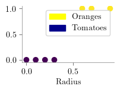
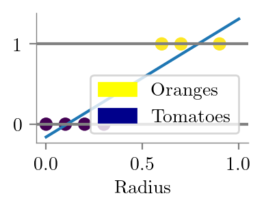
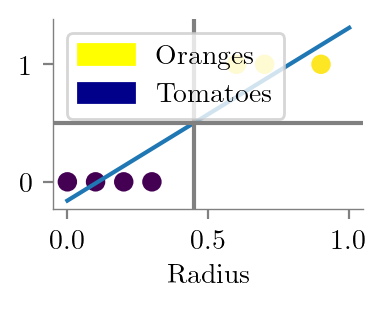
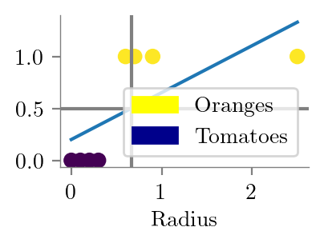
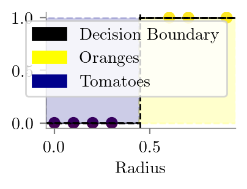
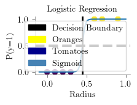
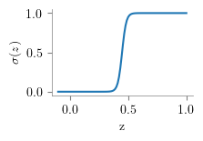

import numpy as np
import sklearn
import matplotlib.pyplot as plt
from latexify import *
%matplotlib inline
%config InlineBackend.figure_format = 'retina'
import matplotlib.patches as mpatchesLogistic Regression - I
ML
x = np.array([0, 0.1, 0.2, 0.3, 0.6, 0.7, 0.9])y = (x>0.4).astype('int')yarray([0, 0, 0, 0, 1, 1, 1])
latexify()
plt.scatter(x, np.zeros_like(x), c=y)
yellow_patch = mpatches.Patch(color='yellow', label='Oranges')
blue_patch = mpatches.Patch(color='darkblue', label='Tomatoes')
# legend outside the plot
plt.legend(handles=[yellow_patch, blue_patch], bbox_to_anchor=(1.05, 1), loc=2, borderaxespad=0.)
#plt.legend(handles=[yellow_patch, blue_patch])
plt.xlabel('Radius')
plt.gca().yaxis.set_visible(False)
format_axes(plt.gca())
plt.savefig("../figures/logistic-regression/logistic-orange-tomatoes-original.pdf", bbox_inches="tight", transparent=True)
plt.scatter(x, y, c=y)
yellow_patch = mpatches.Patch(color='yellow', label='Oranges')
blue_patch = mpatches.Patch(color='darkblue', label='Tomatoes')
plt.legend(handles=[yellow_patch, blue_patch], bbox_to_anchor=(1.05, 1), loc=2, borderaxespad=0.)
plt.xlabel('Radius')
format_axes(plt.gca())
plt.savefig("../figures/logistic-regression/logistic-orange-tomatoes.pdf", bbox_inches="tight", transparent=True)
Fitting linear model
from sklearn.linear_model import LinearRegressionlinr_reg = LinearRegression()linr_reg.fit(x.reshape(-1, 1), y)LinearRegression()In a Jupyter environment, please rerun this cell to show the HTML representation or trust the notebook.
On GitHub, the HTML representation is unable to render, please try loading this page with nbviewer.org.
LinearRegression()
plt.plot(np.linspace(0, 1, 50), linr_reg.predict(np.linspace(0, 1, 50).reshape(-1, 1)))
plt.scatter(x, y, c=y)
yellow_patch = mpatches.Patch(color='yellow', label='Oranges')
blue_patch = mpatches.Patch(color='darkblue', label='Tomatoes')
plt.xlabel('Radius')
format_axes(plt.gca())
plt.axhline(y=1, color='grey', label='P(y=1)')
plt.axhline(y=0, color='grey')
plt.legend(handles=[yellow_patch, blue_patch], bbox_to_anchor=(1.05, 1), loc=2, borderaxespad=0.)
plt.savefig("../figures/logistic-regression/linear-orange-tomatoes.pdf", bbox_inches="tight", transparent=True)
(0.5-linr_reg.intercept_)/linr_reg.coef_array([0.44857143])plt.plot(np.linspace(0, 1, 50), linr_reg.predict(np.linspace(0, 1, 50).reshape(-1, 1)))
plt.scatter(x, y, c=y)
yellow_patch = mpatches.Patch(color='yellow', label='Oranges')
blue_patch = mpatches.Patch(color='darkblue', label='Tomatoes')
plt.xlabel('Radius')
format_axes(plt.gca())
#plt.axhline(y=1, color='grey', label='P(y=1)')
#plt.axhline(y=0, color='grey')
plt.axhline(y=0.5, color='grey')
plt.axvline(x=((0.5-linr_reg.intercept_)/linr_reg.coef_)[0], color='grey')
plt.legend(handles=[yellow_patch, blue_patch], bbox_to_anchor=(1.05, 1), loc=2, borderaxespad=0.)
plt.savefig("../figures/logistic-regression/linear-orange-tomatoes-decision.pdf", bbox_inches="tight", transparent=True)
x_dash = np.append(x, 2.5)
y_dash = np.append(y, 1)
linr_reg.fit(x_dash.reshape(-1, 1), y_dash)LinearRegression()In a Jupyter environment, please rerun this cell to show the HTML representation or trust the notebook.
On GitHub, the HTML representation is unable to render, please try loading this page with nbviewer.org.
LinearRegression()
plt.plot(np.linspace(0, 2.5, 50), linr_reg.predict(np.linspace(0, 2.5, 50).reshape(-1, 1)))
plt.scatter(x_dash, y_dash, c=y_dash)
yellow_patch = mpatches.Patch(color='yellow', label='Oranges')
blue_patch = mpatches.Patch(color='darkblue', label='Tomatoes')
plt.xlabel('Radius')
format_axes(plt.gca())
#plt.axhline(y=1, color='grey', label='P(y=1)')
#plt.axhline(y=0, color='grey')
plt.axhline(y=0.5, color='grey')
plt.axvline(x=((0.5-linr_reg.intercept_)/linr_reg.coef_)[0], color='grey')
plt.legend(handles=[yellow_patch, blue_patch], bbox_to_anchor=(1.05, 1), loc=2, borderaxespad=0.)
plt.savefig("../figures/logistic-regression/linear-orange-tomatoes-decision-modified.pdf", bbox_inches="tight", transparent=True)
from sklearn.linear_model import LogisticRegressionclf = LogisticRegression(penalty=None, solver='lbfgs')clf.fit(x.reshape(-1,1), y)LogisticRegression(penalty=None)In a Jupyter environment, please rerun this cell to show the HTML representation or trust the notebook.
On GitHub, the HTML representation is unable to render, please try loading this page with nbviewer.org.
LogisticRegression(penalty=None)
clf.coef_array([[55.99493009]])-clf.intercept_[0]/clf.coef_[0]array([0.4484548])clf.intercept_array([-25.11119514])def sigmoid(z):
return 1/(1+np.exp(-z))latexify()
plt.scatter(x, y, c=y)
yellow_patch = mpatches.Patch(color='yellow', label='Oranges')
blue_patch = mpatches.Patch(color='darkblue', label='Tomatoes')
black_patch = mpatches.Patch(color='black', label='Decision Boundary')
plt.axvline(x = -clf.intercept_[0]/clf.coef_[0],label='Decision Boundary',linestyle='--',color='k',lw=1)
plt.xlabel('Radius')
format_axes(plt.gca())
plt.legend(handles=[black_patch, yellow_patch, blue_patch], bbox_to_anchor=(1.05, 1), loc=2, borderaxespad=0.)
plt.axhspan(0,1, xmin=0, xmax=0.49, linestyle='--',color='darkblue',lw=1, alpha=0.2)
plt.axhspan(0,0.001, xmin=0, xmax=0.49, linestyle='--',color='k',lw=1, )
plt.axhspan(0,1, xmax=1, xmin=0.49, linestyle='--',color='yellow',lw=1, alpha=0.2)
plt.axhspan(1,1.001, xmax=1, xmin=0.49, linestyle='--',color='k',lw=1, )
plt.savefig("../figures/logistic-regression/linear-orange-tomatoes-decision-ideal.pdf", bbox_inches="tight", transparent=True)
x_dum = np.linspace(-0.1, 1, 100)
plt.plot(x_dum, sigmoid(x_dum*clf.coef_[0] + clf.intercept_[0]))
plt.scatter(x, y, c=y)
latexify()
plt.axvline(-clf.intercept_[0]/clf.coef_[0], lw=2, color='black')
plt.axhline(0.5, linestyle='--',color='k',lw=3, label='P(y=1) = P(y=0)')
plt.ylabel("P(y=1)")
plt.xlabel('Radius')
yellow_patch = mpatches.Patch(color='yellow', label='Oranges')
blue_patch = mpatches.Patch(color='darkblue', label='Tomatoes')
black_patch = mpatches.Patch(color='black', label='Decision Boundary')
sigmoid_patch = mpatches.Patch(color='steelblue', label='Sigmoid')
plt.legend(handles=[black_patch, yellow_patch, blue_patch, sigmoid_patch], bbox_to_anchor=(1.05, 1), loc=2, borderaxespad=0.)
format_axes(plt.gca())
plt.title("Logistic Regression")
plt.savefig("../figures/logistic-regression/logistic.pdf", bbox_inches="tight", transparent=True)
z_lins = np.linspace(-10, 10, 500)
plt.plot(z_lins, sigmoid(z_lins), label=r'$\sigma(z) = \frac{1}{1+e^{-z}}$')
format_axes(plt.gca())
plt.xlabel('z')
plt.ylabel(r'$\sigma(z)$')
# vline at 0
plt.axvline(0, color='black', lw=1, linestyle='--')
# hline at 0.5
plt.axhline(0.5, color='black', lw=1, linestyle='--')
plt.savefig("../figures/logistic-regression/logistic-function.pdf", bbox_inches="tight", transparent=True)
x_dum = np.linspace(-0.1, 1, 100)
plt.plot(x_dum, sigmoid(x_dum*clf.coef_[0] + clf.intercept_[0]))
format_axes(plt.gca())
plt.xlabel("z")
plt.ylabel(r"$\sigma(z)$")
#plt.savefig("../figures/logistic-regression/logistic-function.pdf", bbox_inches="tight", transparent=True)